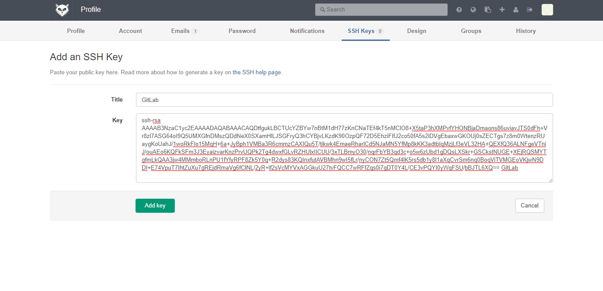
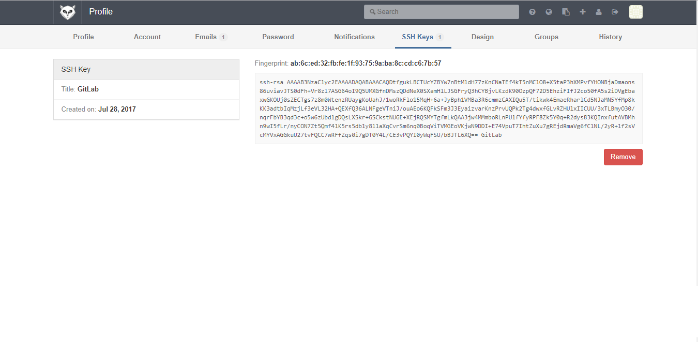

Create SSH Keys in Linux
This tutorial shows how to generate SSH Keys in Linux Operating Systems. Generated a private key file ($HOME/.ssh/id_rsa.pub) and public key file ($HOME/.ssh/id_rsa).
1. Run SSH keygen command ssh-keygen -t rsa -C [SSH_KEY_TITLE] -b 4096
$ ssh-keygen -t rsa -C "GitLab" -b 4096
Generating public/private rsa key pair.
Enter file in which to save the key (/root/.ssh/id_rsa):
Enter passphrase (empty for no passphrase):
Enter same passphrase again:
Your identification has been saved in /root/.ssh/id_rsa.
Your public key has been saved in /root/.ssh/id_rsa.pub.
The key fingerprint is:
ab:6c:ed:32:fb:fe:1f:93:75:9a:ba:8c:cd:c6:7b:57 GitLab
The key's randomart image is:
+--[ RSA 4096]----+
| |
| |
| |
| |
| S . .|
| . o +E|
| .. .+ o .|
| .+.. =o+. .|
| .+B+.ooO+ . |
+-----------------+
2. Verify generated keys
$ cat $HOME/.ssh/id_rsa.pub
ssh-rsa AAAAB3NzaC1yc2EAAAADAQABAAACAQDtfgukLBCTUcYZBYw7nBtM1dH77zKnCNaTEf4kT5nMClO8+X5taP3hXMPvfYHONBjaDmaons86uviavJTS0dFh+Vr8zl7ASG64oI9Q5UMXGfnDMszQDdNeX0SXamHlLJSGFryQ3hCYBjvLKzdK90OzpQF72D5EhziFIfJ2co50fA5s2iDVgEbaxwGKOUj0sZECTgs7z8m0WtenzRUaygKoUahJ/1woRkFlo15MqH+6a+JyBph1VMBa3R6cmmzCAXIQu5T/tikwk4EmaeRharlCd5NJaMN5YfMp8kKK3adtbIqMzjLf3eVL32HA+QEXfQ36ALNFgeVTniJ/ouAEo6KQFkSFm3J3EyaizvarKnzPrvUQPk2Tg4dwxfGLvRZHUlxIICUU/3xTLBmyO30/nqrFbYB3qd3c+o5w6zUbd1gDQsLXSkr+GSCkstNUGE+XEjRQSMYTgfmLkQAA3jw4MMmboRLnPU1fYfyRPF8Zk5Y0q+R2dys83KQInxfutAVBMhn9wI5fLr/nyCON7Zt5Qmf4lK5rs5db1y8l1aXqCvrSm6nq0BoqViTVMGEoVKjwN9DDI+E74VpuT7IhtZuXu7gREjdRmaVg6fClNL/2yR+lf2sVcMYVxAGGkuU27tvFQCC7wRFfZqs0i7gDT0Y4L/CE3vPQYI0yWqFSU/bBJTL6XQ== GitLab
Add Public Key in GitLab Repository
1. Login to GitLab
2. Open SSH Keys page GitLab in [GITLAB_HOST]/profile/keys. Click Add SSH Key

3. Fill title input. Fill Key textbox with generated SSH public key (cat $HOME/.ssh/id_rsa.pub).

4. Click Add key 
Add WebHook in GitLab Project
1. Open Web Hook page in selected project in http://[GITLAB_HOST]/[GITLAB_USERNAME]/[GITLAB_PROJECT_NAME]/hooks
2. Fill Web Hook URL. Check Push events selector
3. Click Add Web Hook

Set Maven project for OpenShift
Java web application have to be a maven project to be able to deploy in OpenShift. Below is OpenShift plugin included in pom.xml.
...
<profile>
<id>openshift</id>
<build>
<plugins>
<plugin>
<artifactId>maven-war-plugin</artifactId>
<configuration>
<failOnMissingWebXml>false</failOnMissingWebXml>
<outputDirectory>deployments</outputDirectory>
<warName>ROOT</warName>
</configuration>
</plugin>
</plugins>
</build>
</profile>
...
</project>
Create Self Signed SSL in Linux
1. Generate private key
openssl genrsa -out ca.key 2048
$ openssl genrsa -out ca.key 2048
Generating RSA private key, 2048 bit long modulus
............+++
........+++
e is 65537 (0x10001)
2. Create CSR file.
openssl req -new -key ca.key -out ca.csr
$ openssl req -new -key ca.key -out ca.csr
You are about to be asked to enter information that will be incorporated
into your certificate request.
What you are about to enter is what is called a Distinguished Name or a DN.
There are quite a few fields but you can leave some blank
For some fields there will be a default value,
If you enter '.', the field will be left blank.
-----
Country Name (2 letter code) [XX]:ID
State or Province Name (full name) []:
Locality Name (eg, city) [Default City]:
Organization Name (eg, company) [Default Company Ltd]:
Organizational Unit Name (eg, section) []:
Common Name (eg, your name or your server's hostname) []:
Email Address []:
Please enter the following 'extra' attributes
to be sent with your certificate request
A challenge password []:
An optional company name []:
$ openssl x509 -req -days 365 -in ca.csr -signkey ca.key -out ca.crt
Signature ok
subject=/C=ID/L=Default City/O=Default Company Ltd
Getting Private key
This guide will generate ca.crt, ca.csr and ca.key files.
$ ls
ca.crt ca.csr ca.key